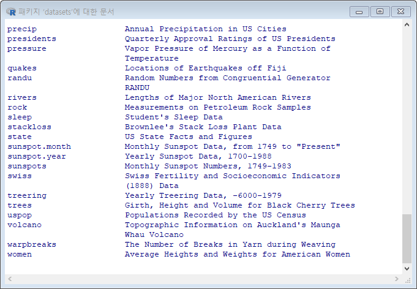
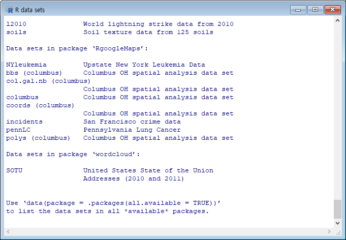

제3장 데이터 구조의 이해와 코딩의 시작
제3장 데이터 구조의 이해와 코딩의 시작I. 벡터1. 벡터 만들기2. 벡터 원소가 하나일 때3. 산술연산3-1. 벡터의 사칙연산 3-2. 서로 다른 데이터 유형과 연산4. 비교 연산자5. 논리 연산자6. 연속적인 값들의 벡터 만들기7. 반복적인 값들의 벡터 만들기8. 벡터 요소의 확인8-1) 벡터의 색인에 의한 확인8-2) 요소 값의 조건 비교에 따른 확인9. 원소 값의 수정 9-1) 벡터의 색인을 참조한 수정9-2) 벡터 요소 값 비교에 의한 수정[연습문제]10. 함수의 사용10-1. 문자열의 결합 : paste()10-2. 결측치 : NULL, NA10-3. Inf, NaNII. 배열1. 1차원 배열2. 2차원 배열 만들기2-1. array() 함수 사용2-2. 벡터 결합으로 배열 만들기3. 2차원 배열의 요소 값 보기와 수정4. 2차원 배열의 행과 열 이름 추가4-1. (방법 1) : colnames(), rownames() 함수 이용4-2. (방법 2) : dimnames = 인수 이용5. 배열 요소 값 확인5-1. 배열의 색인에 의한 확인5-2. 배열 요소의 값 비교에 의한 확인5-3. 행/열의 이름을 이용한 요소의 확인6. 배열 요소 값의 수정6-1. 배열의 색인을 이용한 수정6-2. 배열 요소의 비교에 의한 확인5. 3차원 배열6. 함수 적용III. 행렬1. 행렬 만들기 : matrix() 함수이용.2. 행과 열 이름 주기3. 벡터 결합에 의한 행렬 만들기4. 행과 열 이름 달기5. 대각행렬 만들기6. 행렬의 연산6-1. 행렬의 곱6-2. 전치행렬(transpose matrix) : t() 함수 사용6-3. 역행렬(martix inversion) : solve()6-4. 행렬식(determinant)IV. 리스트1. 리스트 만들기 : list( ) 함수 이용1-1. 리스트의 원소 출력1-2. []와 [[ ]]의 차이1-3. 리스트에 원소 추가1-4. 리스트에서 구성요소 제거1-5. 리스트 합치기1-6. 리스트 요소의 갯수 확인 : length()2. 요소별로 키워드 지정하기2-1. 리스트의 원소 출력2-2. 리스트에 원소 추가2-3. 리스트에서 구성요소 제거V. 데이터 프레임1. 데이터 프레임 생성 <방법 1>1-1. 옵션 : stringsAsFactors= FALSE2. 데이터 프레임 생성 <방법 2>3. 데이터 프레임에 열과 행 단위 추가3-1. 열 추가3-2. 행 추가4. 데이터 프레임의 요소 값 확인4-1. 색인으로 확인하기4-2. 열의 이름으로 확인하기4-3. 요소 값의 비교에 의한 확인4. 요소 값 수정5. 데이터 프레임의 factor 데이터 수정VI. 데이터 세트1. 데이터 세트 목록 보기1-1. 데이터 세트 목록 보기1-2. 데이터 세트의 이용1-3. 데이터 세트의 구조 보기1-4. 데이터 세트의 요약 정보1-5. 데이터 세트의 저장1-6. 저장한 파일을 data 변수로 불러오기VII. 웹 사이트의 데이터 불러오기1. 웹사이트의 데이터 파일 읽기VIII. 사용자 정의 함수1. 함수 만들기1-1. 원의 면적을 구하는 함수의 정의와 호출
I. 벡터
1. 벡터 만들기
xxxxxxxxxxx <- c(80, 85, 70) # 처리할 데이터의 변수 정의x # 변수 내용의 확인c(80, 85, 70) -> x # 바람직하지 않음.xx <- c(1,2,3,4) ; xy <- c(2,3,4,5) ; y(z <- c(1,2))결과 :
xxxxxxxxxx> x <- c(80, 85, 70)> x## [1] 80 85 70> c(80, 85, 70) -> x> x## [1] 80 85 70> x <- c(1,2,3,4) ; x## [1] 1 2 3 4> y <- c(2,3,4,5) ; y## [1] 2 3 4 5> (z <- c(1,2))## [1] 1 2
2. 벡터 원소가 하나일 때
xxxxxxxxxxx <- c(80)xx <- 80x결과 :
xxxxxxxxxx> x <- c(80)> x## [1] 80> x <- 80> x## [1] 80
3. 산술연산
xxxxxxxxxxx <- 5+2xx <- 5/3xx <- 5^2xx <- 5%%3xx <- 5%/%3x결과 :
xxxxxxxxxx> x <- 5+2> x## [1] 7>> x <- 5/3> x## [1] 1.666667>> x <- 5^2> x## [1] 25>> x <- 5%%3> x## [1] 2>> x <- 5%/%3> x## [1] 1
3-1. 벡터의 사칙연산
xxxxxxxxxxx <- c(1, 2, 3, 4) # 4개 원소y <- c(2, 3, 4, 5) # 4개 원소z <- c(1, 2) # 2개 원소w <- x+yww <- x+5ww <- y/2ww <- x+zww <- x/zww <- z/xww <- y %/% x # 몫w <- y %% x # 나머지결과 :
xxxxxxxxxx> x <- c(1, 2, 3, 4) # 4개 원소> y <- c(2, 3, 4, 5) # 4개 원소> z <- c(1, 2) # 2개 원소>> w <- x+y> w## [1] 3 5 7 9>> w <- x+5> w## [1] 6 7 8 9>> w <- y/2> w## [1] 1.0 1.5 2.0 2.5>> w <- x+z> w## [1] 2 4 4 6>> w <- x/z> w## [1] 1 1 3 2>> w <- z/x> w## [1] 1.0000000 1.0000000 0.3333333 0.5000000>> w <- y %/% x ; w## [1] 2 1 1 1>> w <- y %% x ; w## [1] 0 1 1 1
3-2. 서로 다른 데이터 유형과 연산
xxxxxxxxxxx <- c(1, 2, 3) # 숫자 벡터xy <- c("A", "B", "c") # 문자 벡터 : ""로 묶는다.yy <- c("A", 1, 2) # 문자와 숫자의 혼합 -> 모두 문자로 처리함.yz <- y + 1 # Error 발생결과 :
xxxxxxxxxx> y <- c("A", "B", "c")> y## [1] "A" "B" "c">> y <- c("A", 1, 2)> y## [1] "A" "1" "2">> z <- y + 1## Error in y + 1 : 이항연산자에 수치가 아닌 인수
4. 비교 연산자
( >=, >, ==, <, <= ) => 결과는 'TRUE' 또는 'FALSE'
xxxxxxxxxxx <- 5 < 3x y <- c(10, 20, 30)z <- y <= 10z결과 :
xxxxxxxxxx> x <- 5 < 3> x## [1] FALSE>> y <- c(10, 20, 30)> z <- y <= 10> z## [1] TRUE FALSE FALSE
5. 논리 연산자
xxxxxxxxxxx <- TRUEy <- FALSEx | yx & y# p.67x <- 3!xisTRUE(y)z <- c(TRUE, FALSE, FALSE)z | y결과 :
xxxxxxxxxx> x <- TRUE> y <- FALSE> x | y## [1] TRUE>> x & y## [1] FALSE>> x <- 3> !x## [1] FALSE>> isTRUE(y)## [1] FALSE>> z <- c(TRUE, FALSE, FALSE)> z | y## [1] TRUE FALSE FALSE
6. 연속적인 값들의 벡터 만들기
xxxxxxxxxxx <- seq(1, 10)xx <- 1:10xx <- seq(10, 1)xy <- 10:1yx <- seq(1, 10, by=3)xy <- seq(1, 10, length.out=5)y결과 :
xxxxxxxxxx> x <- seq(10, 1)> x## [1] 10 9 8 7 6 5 4 3 2 1>> y <- 10:1> x <- seq(1, 10)> x## [1] 1 2 3 4 5 6 7 8 9 10>> x <- 1:10> x## [1] 1 2 3 4 5 6 7 8 9 10>> x <- seq(10, 1)> x## [1] 10 9 8 7 6 5 4 3 2 1>> y <- 10:1> y## [1] 10 9 8 7 6 5 4 3 2 1>> x <- seq(1, 10, by=3)> x## [1] 1 4 7 10>> y <- seq(1, 10, length.out=5)> y## [1] 1.00 3.25 5.50 7.75 10.00
7. 반복적인 값들의 벡터 만들기
xxxxxxxxxxx <- c(1, 2, 3)rep(x, times=2)rep(x, each=2)x1 <- rep(1:4, 2) ; x1x2 <- rep(1:4, each = 2) ; x2x3 <- rep(1:4, c(2,2,2,2)) ; x3 x4 <- rep(1:4, c(2,1,2,1)) ; x4결과 :
xxxxxxxxxx> x <- c(1, 2, 3)> rep(x, times=2)## [1] 1 2 3 1 2 3>> rep(x, each=2)## [1] 1 1 2 2 3 3>> x1 <- rep(1:4, 2) ; x1## [1] 1 2 3 4 1 2 3 4>> x2 <- rep(1:4, each = 2) ; x2## [1] 1 1 2 2 3 3 4 4>> x3 <- rep(1:4, c(2,2,2,2)) ; x3## [1] 1 1 2 2 3 3 4 4>> x4 <- rep(1:4, c(2,1,2,1)) ; x4## [1] 1 1 2 3 3 4
8. 벡터 요소의 확인
8-1) 벡터의 색인에 의한 확인
xxxxxxxxxxx <- c(1, 2, 3, 4, 5)x[2]x[c(1, 3, 5)]x[-c(2, 4)]결과 :
xxxxxxxxxx> x <- c(1, 2, 3, 4, 5)> x[2]## [1] 2>> x[c(1, 3, 5)]## [1] 1 3 5>> x[-c(2, 4)]## [1] 1 3 5
8-2) 요소 값의 조건 비교에 따른 확인
xxxxxxxxxxx <- c(1, 2, 3, 4, 5)x[x > 2]x[x >=2 & x <=4]결과 :
xxxxxxxxxx> x <- c(1, 2, 3, 4, 5)> x[x > 2]## [1] 3 4 5>> x[x >=2 & x <=4]## [1] 2 3 4
9. 원소 값의 수정
9-1) 벡터의 색인을 참조한 수정
xxxxxxxxxxx <- c(1, 2, 3, 4, 5)x[2] <- 20xx[c(3, 4)] <- 15x결과 :
xxxxxxxxxx> x <- c(1, 2, 3, 4, 5)> x[2] <- 20> x## [1] 1 20 3 4 5>> x[c(3, 4)] <- 15> x## [1] 1 20 15 15 5
9-2) 벡터 요소 값 비교에 의한 수정
xxxxxxxxxxx <- c(1, 2, 3, 4, 5)x[ x <= 3 ] <- 10결과 :
xxxxxxxxxx> x <- c(1, 2, 3, 4, 5)> x[x <= 3] <- 10> x## [1] 10 10 10 4 5
[연습문제]
Ramen 변수에 (Cup, Bowl, Cup, Bowl)의 데이터를 입려하고, Cup을 Bowl로 Bowl은 컵으로 데이터를 변경하라.
xxxxxxxxxxRamen <- c("Cup", "Bowl", "Cup", "Bowl")Ramen[Ramen == "Cup"] <- "x"RamenRamen[Ramen == "Bowl"] <- "Cup"RamenRamen[Ramen == "x"] <- "Bowl"Ramen결과 :
xxxxxxxxxx> Ramen <- c("Cup", "Bowl", "Cup", "Bowl")>> Ramen[Ramen == "Cup"] <- "x"> Ramen## [1] "x" "Bowl" "x" "Bowl"> Ramen[Ramen == "Bowl"] <- "Cup"> Ramen## [1] "x" "Cup" "x" "Cup"> Ramen[Ramen == "x"] <- "Bowl"> Ramen## [1] "Bowl" "Cup" "Bowl" "Cup"
10. 함수의 사용
xxxxxxxxxxx <- seq(1:10)sum(x)mean(x)var(x)sd(x)sqrt(x)length(x)x <- c(1, 2, -3)abs(x)summary(x)결과 :
xxxxxxxxxx> x <- seq(1:10)>> sum(x)## [1] 55> mean(x)## [1] 5.5> var(x)## [1] 9.166667> sd(x)## [1] 3.02765> sqrt(x)## [1] 1.000000 1.414214 1.732051 2.000000 2.236068## [6] 2.449490 2.645751 2.828427 3.000000 3.162278> length(x)## [1] 10>> x <- c(1, 2, -3)> abs(x)## [1] 1 2 3>> summary(x)## Min. 1st Qu. Median Mean 3rd Qu. Max.## -3.0 -1.0 1.0 0.0 1.5 2.0
10-1. 문자열의 결합 : paste()
xxxxxxxxxxx <- c("이","박","김","최","차")y <- c("순신", "원순","재경", "창원", "태균")paste(x,y)paste(x, y, sep=",")paste(x, y, sep="")결과 :
xxxxxxxxxx> x <- c("이","박","김","최","차")> y <- c("순신", "원순", "재경", "창원", "태균")> paste(x,y)## [1] "이 순신" "박 원순" "김 재경" "최 창원"## [5] "차 태균"> paste(x, y, sep=",")## [1] "이,순신" "박,원순" "김,재경" "최,창원"## [5] "차,태균"> paste(x, y, sep="")## [1] "이순신" "박원순" "김재경" "최창원" "차태균"
10-2. 결측치 : NULL, NA
xxxxxxxxxx# NULL, NA(not available)x <- NULLis.null(x)y <- c(1, 2, 3, NA, 5)y결과 :
xxxxxxxxxx> x <- NULL> is.null(x)## [1] TRUE>> y <- c(1, 2, 3, NA, 5)> y## [1] 1 2 3 NA 5
10-3. Inf, NaN
xxxxxxxxxxz <- 10/0zw <- 0/0w결과 :
xxxxxxxxxx> z <- 10/0> z## [1] Inf>> w <- 0/0> w## [1] NaN
II. 배열
array() 함수 사용
1. 1차원 배열
xxxxxxxxxxx <- array(1:3, dim=c(3))x결과 :
xxxxxxxxxx> x <- array(1:3, dim=c(3))> x## [1] 1 2 3
2. 2차원 배열 만들기
2-1. array() 함수 사용
xxxxxxxxxxx <- array(1:6, dim=c(2, 3)) # dim=c(2, 3) : 2행, 3열xx <- array(c(2, 4, 6, 8, 10, 12), dim=c(2, 3))xarray(x, dim = c(a,b))
인수 :
x: 배열로 표현한 벡터dim = c(a, b): 배열의 크기 지정, a개 행 b개 열
결과 :
xxxxxxxxxx> x <- array(1:6, dim=c(2, 3))> x## [,1] [,2] [,3]## [1,] 1 3 5## [2,] 2 4 6>> x <- array(c(2, 4, 6, 8, 10, 12), dim=c(2, 3))> x## [,1] [,2] [,3]## [1,] 2 6 10## [2,] 4 8 12
2-2. 벡터 결합으로 배열 만들기
xxxxxxxxxxv1 <- c(1,2,3,4)v2 <- c(5,6,7,8)v3 <- c(9,10,11,12)x <- cbind(v1, v2, v3) # cbind() : 열(column) 단위로 묶기(bind)xy <- rbind(v1, v2, v3) # rbind() : 행(row) 단위로 묶기(bind)y결과 :
xxxxxxxxxx> v1 <- c(1,2,3,4)> v2 <- c(5,6,7,8)> v3 <- c(9,10,11,12)>> x <- cbind(v1, v2, v3) # cbind() : 열(column) 단위로 묶기(bind)> x## v1 v2 v3## [1,] 1 5 9## [2,] 2 6 10## [3,] 3 7 11## [4,] 4 8 12>> y <- rbind(v1, v2, v3) # rbind() : 행(row) 단위로 묶기(bind)> y## [,1] [,2] [,3] [,4]## v1 1 2 3 4## v2 5 6 7 8## v3 9 10 11 12
3. 2차원 배열의 요소 값 보기와 수정
xxxxxxxxxxx[1, 3] x[, 3]x[,-3]x[1, 2] <- 20x결과 :
xxxxxxxxxx> x[1, 3]## v3## 9>> x[, 3]## [1] 9 10 11 12>> x[,-3]## v1 v2## [1,] 1 5## [2,] 2 6## [3,] 3 7## [4,] 4 8>> x[1, 2] <- 20> x## v1 v2 v3## [1,] 1 20 9## [2,] 2 6 10## [3,] 3 7 11## [4,] 4 8 12
4. 2차원 배열의 행과 열 이름 추가
4-1. (방법 1) : colnames(), rownames() 함수 이용
xxxxxxxxxxx1 <- array(c(2, 4, 6, 8, 10, 12), dim=c(2, 3))x1colnames(x1) <- c("1열", "2열", "3열")x1rownames(x1) <- c("1행", "2행")x1x1["1행", ]x1[ ,"2열"]결과 :
xxxxxxxxxx> x1 <- array(c(2, 4, 6, 8, 10, 12), dim=c(2, 3))> x1## [,1] [,2] [,3]## [1,] 2 6 10## [2,] 4 8 12>> colnames(x1) <- c("1열", "2열", "3열")> x1## 1열 2열 3열## [1,] 2 6 10## [2,] 4 8 12>> rownames(x1) <- c("1행", "2행")> x1## 1열 2열 3열## 1행 2 6 10## 2행 4 8 12>> x1["1행", ]## 1열 2열 3열## 2 6 10>> x1[ ,"2열"]## 1행 2행## 6 8
4-2. (방법 2) : dimnames = 인수 이용
xxxxxxxxxxnames <- list(c("Row 1", "Row 2"), c("Col 1", "Col 2", "Col 3"))x2 <- array(c(8, 10, 12, 14, 16, 18), dim=c(2, 3), dimnames=names)x2x2["Row 1", ]x2[ ,"Col 2"]결과 :
xxxxxxxxxx> names <- list(c("Row 1", "Row 2"), c("Col 1", "Col 2", "Col 3"))> x2 <- array(c(8, 10, 12, 14, 16, 18), dim=c(2, 3), dimnames=names)> x2## Col 1 Col 2 Col 3## Row 1 8 12 16## Row 2 10 14 18>> x2["Row 1", ]## Col 1 Col 2 Col 3## 8 12 16> x2[ ,"Col 2"]## Row 1 Row 2## 12 14
5. 배열 요소 값 확인
5-1. 배열의 색인에 의한 확인
xxxxxxxxxxx <- array(1:6, dim=c(2, 3))x[1,3] # 1행 3열 요소의 값 확인x[1,] # 1행 전체 요소의 값 확인x[,3] # 3열 전체 요소의 값 확인x[,-3] # 3열을 제외한 전체 요소의 값 확인x[-1,] # 1행을 제외한 전체 요소의 값 확인결과 :
xxxxxxxxxx> x <- array(1:6, dim=c(2, 3))>> x[1,3] # 1행 3열 요소의 값 확인## [1] 5>> x[1,] # 1행 전체 요소의 값 확인## [1] 1 3 5> x[,3] # 3열 전체 요소의 값 확인## [1] 5 6>> x[,-3] # 3열을 제외한 전체 요소의 값 확인## [,1] [,2]## [1,] 1 3## [2,] 2 4> x[-1,] # 1행을 제외한 전체 요소의 값 확인## [1] 2 4 6
5-2. 배열 요소의 값 비교에 의한 확인
xxxxxxxxxxx <- array(1:6, dim=c(2, 3))x[ x<6 ]x[ x>2 & x<6 ]결과 :
xxxxxxxxxx> x <- array(1:6, dim=c(2, 3))>> x[ x<6 ]## [1] 1 2 3 4 5> x[ x>2 & x<6 ]## [1] 3 4 5
5-3. 행/열의 이름을 이용한 요소의 확인
xxxxxxxxxxnames <- list(c("Row 1", "Row 2"), c("Col 1", "Col 2", "Col 3"))x2 <- array(c(8, 10, 12, 14, 16, 18), dim=c(2, 3), dimnames=names)x2["Row 1", ]x2[ ,"Col 2"]결과 :
xxxxxxxxxx> names <- list(c("Row 1", "Row 2"), c("Col 1", "Col 2", "Col 3"))> x2 <- array(c(8, 10, 12, 14, 16, 18), dim=c(2, 3), dimnames=names)>> x2["Row 1", ]## Col 1 Col 2 Col 3## 8 12 16> x2[ ,"Col 2"]## Row 1 Row 2## 12 14
6. 배열 요소 값의 수정
6-1. 배열의 색인을 이용한 수정
xxxxxxxxxxx <- array(1:6, dim=c(2, 3))x[1,2] <- 30x결과 :
xxxxxxxxxx> x <- array(1:6, dim=c(2, 3))>> x[1,2] <- 30> x## [,1] [,2] [,3]## [1,] 1 30 5## [2,] 2 4 6
6-2. 배열 요소의 비교에 의한 확인
xxxxxxxxxxx <- array(1:6, dim=c(2, 3))x[ x<6 ] <- 3x결과 :
xxxxxxxxxx> x <- array(1:6, dim=c(2, 3))>> x[ x<6 ] <- 3> x## [,1] [,2] [,3]## [1,] 3 3 3## [2,] 3 3 6
5. 3차원 배열
xxxxxxxxxxx <- array(1:24, dim=c(2, 3, 4)) # 2행, 3열의 배열 4개x결과 :
xxxxxxxxxx> x <- array(1:24, dim=c(2, 3, 4)) # (2 X 3) 배열이 4개 있는 것과 같음.> x## , , 1#### [,1] [,2] [,3]## [1,] 1 3 5## [2,] 2 4 6#### , , 2#### [,1] [,2] [,3]## [1,] 7 9 11## [2,] 8 10 12#### , , 3#### [,1] [,2] [,3]## [1,] 13 15 17## [2,] 14 16 18#### , , 4#### [,1] [,2] [,3]## [1,] 19 21 23## [2,] 20 22 24
6. 함수 적용
xxxxxxxxxxx <- array(c(2,4,6,8,10,12), dim=c(2,3))apply(x, MARGIN = 1, sum)apply(x, 1, mean)apply(x, 1, sd)apply(x, MARGIN = 2, sum)apply(x, 2, mean)apply(x, 2, sd)apply(x, MARGIN, FUN, …)
인수 :
x: 함수를 적용할 배열MARGIN =:1이면 행단위,2이면 열단위,c(1, 2)이면 행과 열 동시에FUN: 적용할 함수 (sum, mena, sd, median, ... 사용자정의 함수도 가능)
결과 :
xxxxxxxxxx> x <- array(c(2,4,6,8,10,12), dim=c(2,3))>> apply(x, MARGIN = 1, sum)## [1] 18 24> apply(x, 1, mean)## [1] 6 8> apply(x, 1, sd)## [1] 4 4>> apply(x, MARGIN = 2, sum)## [1] 6 14 22> apply(x, 2, mean)## [1] 3 7 11> apply(x, 2, sd)## [1] 1.414214 1.414214 1.414214
#####
III. 행렬
1. 행렬 만들기 : matrix() 함수이용.
xxxxxxxxxxx <- matrix(1:6, nrow=2)xx <- matrix(1:6, nrow=2, byrow=TRUE)xx[1, 3]결과 :
xxxxxxxxxx> x <- matrix(1:6, nrow=2)> x## [,1] [,2] [,3]## [1,] 1 3 5## [2,] 2 4 6>> x <- matrix(1:6, nrow=2, byrow=TRUE)> x## [,1] [,2] [,3]## [1,] 1 2 3## [2,] 4 5 6>> x[1, 3]## [1] 3
2. 행과 열 이름 주기
xxxxxxxxxxnames <- list(c("1행", "2행"), c("1열", "2열", "3열"))matrix(1:6, nrow=2, byrow=TRUE, dimnames=names)결과 :
xxxxxxxxxx> names <- list(c("1행", "2행"), c("1열", "2열", "3열"))>> matrix(1:6, nrow=2, byrow=TRUE, dimnames=names)## 1열 2열 3열## 1행 1 2 3## 2행 4 5 6
3. 벡터 결합에 의한 행렬 만들기
xxxxxxxxxxv1 <- c(1, 2, 3, 4)v2 <- c(5, 6, 7, 8)v3 <- c(9, 10, 11, 12)x <- cbind(v1, v2, v3)xx[c(2,4), c(1,3)] # 행렬 중 2,4 행과, 1,3 열로 구성된 행렬 출력 <<<++++++++++결과 :
xxxxxxxxxx> v1 <- c(1, 2, 3, 4)> v2 <- c(5, 6, 7, 8)> v3 <- c(9, 10, 11, 12)> x <- cbind(v1, v2, v3)> x## v1 v2 v3## [1,] 1 5 9## [2,] 2 6 10## [3,] 3 7 11## [4,] 4 8 12>> rbind(v1, v2, v3)## [,1] [,2] [,3] [,4]## v1 1 2 3 4## v2 5 6 7 8## v3 9 10 11 12
4. 행과 열 이름 달기
xxxxxxxxxxrownames(x) <- c("1행", "2행", "3행", "4행")xcolnames(x) <- c("1열", "2열", "3열")x결과 :
xxxxxxxxxx> rownames(x) <- c("1행", "2행", "3행", "4행")> x## v1 v2 v3## 1행 1 5 9## 2행 2 6 10## 3행 3 7 11## 4행 4 8 12>> colnames(x) <- c("1열", "2열", "3열")> x## 1열 2열 3열## 1행 1 5 9## 2행 2 6 10## 3행 3 7 11## 4행 4 8 12
5. 대각행렬 만들기
대각행렬(diagonal matrix) : 행렬의 대각선 요소를 제외한 나머지 요소는 모두 0인 행렬
xxxxxxxxxxx2 <- diag(1, 5) # 항등행렬(Identity Matrix)x2x3 <- diag(10)x3x4 <- diag(1:10) ; x4 ( x5 <- diag(c(1,3,5,7,9)) )결과 :
xxxxxxxxxx> x2 <- diag(1, 5) # 항등행렬(Identity Matrix)> x2## [,1] [,2] [,3] [,4] [,5]## [1,] 1 0 0 0 0## [2,] 0 1 0 0 0## [3,] 0 0 1 0 0## [4,] 0 0 0 1 0## [5,] 0 0 0 0 1>> x3 <- diag(10)> x3## [,1] [,2] [,3] [,4] [,5] [,6] [,7] [,8] [,9] [,10]## [1,] 1 0 0 0 0 0 0 0 0 0## [2,] 0 1 0 0 0 0 0 0 0 0## [3,] 0 0 1 0 0 0 0 0 0 0## [4,] 0 0 0 1 0 0 0 0 0 0## [5,] 0 0 0 0 1 0 0 0 0 0## [6,] 0 0 0 0 0 1 0 0 0 0## [7,] 0 0 0 0 0 0 1 0 0 0## [8,] 0 0 0 0 0 0 0 1 0 0## [9,] 0 0 0 0 0 0 0 0 1 0## [10,] 0 0 0 0 0 0 0 0 0 1>> x4 <- diag(1:10) ; x4## [,1] [,2] [,3] [,4] [,5] [,6] [,7] [,8] [,9] [,10]## [1,] 1 0 0 0 0 0 0 0 0 0## [2,] 0 2 0 0 0 0 0 0 0 0## [3,] 0 0 3 0 0 0 0 0 0 0## [4,] 0 0 0 4 0 0 0 0 0 0## [5,] 0 0 0 0 5 0 0 0 0 0## [6,] 0 0 0 0 0 6 0 0 0 0## [7,] 0 0 0 0 0 0 7 0 0 0## [8,] 0 0 0 0 0 0 0 8 0 0## [9,] 0 0 0 0 0 0 0 0 9 0## [10,] 0 0 0 0 0 0 0 0 0 10>> ( x5 <- diag(c(1,3,5,7,9)) )## [,1] [,2] [,3] [,4] [,5]## [1,] 1 0 0 0 0## [2,] 0 3 0 0 0## [3,] 0 0 5 0 0## [4,] 0 0 0 7 0## [5,] 0 0 0 0 9
6. 행렬의 연산
6-1. 행렬의 곱
xxxxxxxxxxx <- matrix(c(1:6), ncol=3); xy <- matrix(c(1,-1,2,3,2,-1), ncol=3); yx*ya <- matrix(c(2,1,0,1,2,1,0,1,2),ncol=3); ap <- matrix(c(1,0,0,0,0,1,0,1,0),ncol=3); pp %*% a # p의 열의 갯수와 a의 행의 갯수가 같아야 함.결과 :
xxxxxxxxxx> x <- matrix(c(1:6), ncol=3); x## [,1] [,2] [,3]## [1,] 1 3 5## [2,] 2 4 6> y <- matrix(c(1,-1,2,3,2,-1), ncol=3); y## [,1] [,2] [,3]## [1,] 1 2 2## [2,] -1 3 -1>> x*y## [,1] [,2] [,3]## [1,] 1 6 10## [2,] -2 12 -6> a <- matrix(c(2,1,0,1,2,1,0,1,2),ncol=3); a## [,1] [,2] [,3]## [1,] 2 1 0## [2,] 1 2 1## [3,] 0 1 2> p <- matrix(c(1,0,0,0,0,1,0,1,0),ncol=3); p## [,1] [,2] [,3]## [1,] 1 0 0## [2,] 0 0 1## [3,] 0 1 0>> p %*% a # p의 열의 갯수와 a의 행의 갯수가 같아야 함.## [,1] [,2] [,3]## [1,] 2 1 0## [2,] 0 1 2## [3,] 1 2 1
6-2. 전치행렬(transpose matrix) : t() 함수 사용
xxxxxxxxxxx <- matrix(c(1:6), ncol=3); xt(x)x <- matrix(c(1:6), ncol=3); xy <- matrix(c(1,-1,2,3,2,-1), ncol=3); yz <- t(x)%*%y ; z결과 :
xxxxxxxxxx> x <- matrix(c(1:6), ncol=3); x## [,1] [,2] [,3]## [1,] 1 3 5## [2,] 2 4 6> t(x)## [,1] [,2]## [1,] 1 2## [2,] 3 4## [3,] 5 6>> x <- matrix(c(1:6), ncol=3); x## [,1] [,2] [,3]## [1,] 1 3 5## [2,] 2 4 6> y <- matrix(c(1,-1,2,3,2,-1), ncol=3); y## [,1] [,2] [,3]## [1,] 1 2 2## [2,] -1 3 -1> z <- t(x)%*%y ; z## [,1] [,2] [,3]## [1,] -1 8 0## [2,] -1 18 2## [3,] -1 28 4
6-3. 역행렬(martix inversion) : solve()
A가 n×n 행렬일 때, 아래를 만족하는 n×n 행렬 B가 존재하면, B를 A의 역행렬이라고 하고, A−1로 표시함.
AB = BA = I (identity matrix)
xxxxxxxxxxa <- matrix(c(1,2,3,3,0,1,5,4,2), ncol=3); asolve(a)결과 :
xxxxxxxxxx> a <- matrix(c(1,2,3,3,0,1,5,4,2), ncol=3); a## [,1] [,2] [,3]## [1,] 1 3 5## [2,] 2 0 4## [3,] 3 1 2> solve(a)## [,1] [,2] [,3]## [1,] -0.13333333 -0.03333333 0.4## [2,] 0.26666667 -0.43333333 0.2## [3,] 0.06666667 0.26666667 -0.2
6-4. 행렬식(determinant)
xxxxxxxxxxa <- matrix(c(1,2,3,4,5,6,7,8,9), c(3,3)) det(a)b <- matrix(c(0,1,2,3,4,5,6,7,9), c(3,3)) det(b)결과 :
xxxxxxxxxx> a <- matrix(c(1,2,3,4,5,6,7,8,9), c(3,3))> det(a)## [1] 0>> b <- matrix(c(0,1,2,3,4,5,6,7,9), c(3,3))> det(b)## [1] -3
#####
IV. 리스트
1. 리스트 만들기 : list( ) 함수 이용
xxxxxxxxxxx <- list("홍길동", "2016001", 20, c("IT융합", "데이터 관리"))xstr(x)# 참고자료 : # https://jeongchul.tistory.com/485# https://jeongchul.tistory.com/486?category=558492결과 :
xxxxxxxxxx> x <- list("홍길동", "2016001", 20, c("IT융합", "데이터 관리"))> x## [[1]]## [1] "홍길동"#### [[2]]## [1] "2016001"#### [[3]]## [1] 20#### [[4]]## [1] "IT융합" "데이터 관리">> str(x)## List of 4## $ : chr "홍길동"## $ : chr "2016001"## $ : num 20## $ : chr [1:2] "IT융합" "데이터 관리"
1-1. 리스트의 원소 출력
xxxxxxxxxxx[1] # 1번째 요소 출력, [] 하나만 사용되면 부분 리스트.x[[1]] # 1번째 요소 출력, [[]] 두개면 벡터로 처리됨.x[4] # 4번째 요소 출력 {리스트} : x[4]가 벡터 요소임.x[4][1] # x[4]와 같음 (리스트)x[[4]] # 4번째 요소를 벡터로 출력x[4][[1]] # x[[4]]와 같음.x[[4]][1] # 4번째 요소의 첫 번째 요소를 출력x[[4]][2] # 4번째 요소의 두 번째 요소를 출력결과 :
xxxxxxxxxx> x[1] # 1번째 요소 출력, [] 하나만 사용되면 부분 리스트.## [[1]]## [1] "홍길동"##>> x[[1]] # 1번째 요소 출력, [[]] 두개면 벡터로 처리됨.## [1] "홍길동">> x[4] # 4번째 요소 출력 {리스트} : x[4]가 벡터 요소임.## [[1]]## [1] "IT융합" "데이터 관리"##>> x[4][1] # x[4]와 같음 (리스트)## [[1]]## [1] "IT융합" "데이터 관리"##>>> x[[4]] # 4번째 요소를 벡터로 출력## [1] "IT융합" "데이터 관리">> x[4][[1]] # x[[4]]와 같음.## [1] "IT융합" "데이터 관리">>> x[[4]][1] # 4번째 요소의 첫 번째 요소를 출력## [1] "IT융합">> x[[4]][2] # 4번째 요소의 두 번째 요소를 출력## [1] "데이터 관리"
1-2. []와 [[ ]]의 차이
[ ]: 리스트출력[[ ]]: 벡터출력[ ][ ]: 리스트출력[ ][[ ]]: 벡터출력[[ ]][ ]: 벡터
xxxxxxxxxxx[c(1,3)] # 1번째 요소와 3번째 요소로 구성된 리스트 출력x[c(1,4)] # 1번째 요소와 4번째 요소로 구성된 리스트 출력 결과 :
xxxxxxxxxx> x[c(1,4)] # 1번째 요소와 4번째 요소로 구성된 리스트 출력## [[1]]## [1] "홍길동"#### [[2]]## [1] "IT융합" "데이터 관리"##
1-3. 리스트에 원소 추가
xxxxxxxxxxx[[5]] <- c("서울", "동대문") # 5번째 요소로 문자벡터 추가xx[6:8] <- c(FALSE, TRUE, FALSE) # 6 ~ 8번째 요소 추가x결과 :
xxxxxxxxxx> x[[5]] <- c("서울", "동대문") # 5번째 요소로 문자벡터 추가> x## [[1]]## [1] "홍길동"#### [[2]]## [1] "2016001"#### [[3]]## [1] 20#### [[4]]## [1] "IT융합" "데이터 관리"#### [[5]]## [1] "서울" "동대문"##>> x[6:8] <- c(FALSE, TRUE, FALSE) # 6 ~ 8번째 요소 추가> x## [[1]]## [1] "홍길동"#### [[2]]## [1] "2016001"#### [[3]]## [1] 20#### [[4]]## [1] "IT융합" "데이터 관리"#### [[5]]## [1] "서울" "동대문"#### [[6]]## [1] FALSE#### [[7]]## [1] TRUE#### [[8]]## [1] FALSE##
1-4. 리스트에서 구성요소 제거
xxxxxxxxxxx[[7]] <- NULLx결과 :
xxxxxxxxxx> x[[7]] <- NULL> x## [[1]]## [1] "홍길동"#### [[2]]## [1] "2016001"#### [[3]]## [1] 20#### [[4]]## [1] "IT융합" "데이터 관리"#### [[5]]## [1] "서울" "동대문"#### [[6]]## [1] FALSE#### [[7]]## [1] FALSE##
1-5. 리스트 합치기
xxxxxxxxxxx1 <- list(3, 4)x2 <- list("Son", "Lee")x3 <- c(x1,x2)x3결과 :
xxxxxxxxxx> x1 <- list(3, 4)> x2 <- list("Son", "Lee")>> x3 <- c(x1,x2)> x3## [[1]]## [1] 3#### [[2]]## [1] 4#### [[3]]## [1] "Son"#### [[4]]## [1] "Lee"##
1-6. 리스트 요소의 갯수 확인 : length()
xxxxxxxxxxlength(x)length(x1)length(x2)length(x3)결과 :
xxxxxxxxxx> length(x)## [1] 7>> length(x1)## [1] 2>> length(x2)## [1] 2>> length(x3)## [1] 4
2. 요소별로 키워드 지정하기
xxxxxxxxxxy <- list( 성명 = "홍길동", 학번 = "2016001", 나이 = 20, 수강과목 = c("IT융합", "데이터 관리") )ystr(y) # 변수 y의 구조 보기결과 :
xxxxxxxxxx> y <- list( 성명 = "홍길동", 학번 = "2016001", 나이 = 20, 수강과목 = c("IT융합", "데이터 관리") )> y## $`성명`## [1] "홍길동"#### $학번## [1] "2016001"#### $나이## [1] 20#### $수강과목## [1] "IT융합" "데이터 관리"##>> str(y) # 변수 y의 구조 보기## List of 4## $ 성명 : chr "홍길동"## $ 학번 : chr "2016001"## $ 나이 : num 20## $ 수강과목: chr [1:2] "IT융합" "데이터 관리"
2-1. 리스트의 원소 출력
xxxxxxxxxxy["성명"] # '성명' 요소를 리스트로 출력y[["성명"]] # '성명' 요소를 벡터로 출력 y$성명 # '성명' 요소를 벡터로 출력 y$수강과목 # '수강과목' 요소를 벡터로 출력 y$수강과목[1] # '수강과목'의 첫번째 요소를 출력 <<<########결과 :
xxxxxxxxxx> y["성명"] # '성명' 요소를 리스트로 출력## $`성명`## [1] "홍길동"##>> y[["성명"]] # '성명' 요소를 벡터로 출력## [1] "홍길동">> y$성명 # '성명' 요소를 벡터로 출력## [1] "홍길동">> y$수강과목 # '수강과목' 요소를 벡터로 출력## [1] "IT융합" "데이터 관리">> y$수강과목[1] # '수강과목'의 첫번째 요소를 출력 <<<########## [1] "IT융합"
2-2. 리스트에 원소 추가
xxxxxxxxxxy$취미 <- "낚시"y결과 :
xxxxxxxxxx> y$취미 <- "낚시"> y## $`성명`## [1] "홍길동"#### $학번## [1] "2016001"#### $나이## [1] 20#### $수강과목## [1] "IT융합" "데이터 관리"#### $취미## [1] "낚시"##
2-3. 리스트에서 구성요소 제거
xxxxxxxxxxy$취미 <- NULLy결과 :
xxxxxxxxxx> y$취미 <- NULL> y## $`성명`## [1] "홍길동"#### $학번## [1] "2016001"#### $나이## [1] 20#### $수강과목## [1] "IT융합" "데이터 관리"##
#####
V. 데이터 프레임
두 명의 고객 정보에 대한 데이터 프레임 만들기 (열(column)이 하나의 요소가 됨)
xxxxxxxxxx# ----------------------# 성명 나이 주소# ----------------------# 홍길동 20 서울# 손오공 30 부산
1. 데이터 프레임 생성 <방법 1>
xxxxxxxxxxname <- c("홍길동", "손오공")age <- c(20,30)address <- c("서울", "부산")student <- data.frame(name, age, address) # 3개의 열 벡터로 데이터 프레임 생성student # 벡터 이름이 자동으로 열의 이름으로 지정됨str(student) # student 변수의 구조 보기결과 :
xxxxxxxxxx> name <- c("홍길동", "손오공")> age <- c(20,30)> address <- c("서울", "부산")>> student <- data.frame(name, age, address) # 3개의 열 벡터로 데이터 프레임 생성> student # 벡터 이름이 자동으로 열의 이름으로 지정됨## name age address## 1 홍길동 20 서울## 2 손오공 30 부산>> str(student) # student 변수의 구조 보기## 'data.frame': 2 obs. of 3 variables:## $ name : Factor w/ 2 levels "손오공","홍길동": 2 1## $ age : num 20 30## $ address: Factor w/ 2 levels "부산","서울": 2 1
1-1. 옵션 : stringsAsFactors= FALSE
xxxxxxxxxxstudent1 <- data.frame(name, age, address, stringsAsFactors=FALSE)student1str(student1)결과 :
xxxxxxxxxx> student1 <- data.frame(name, age, address, stringsAsFactors=FALSE)> student1## name age address## 1 홍길동 20 서울## 2 손오공 30 부산>> str(student1)## 'data.frame': 2 obs. of 3 variables:## $ name : chr "홍길동" "손오공"## $ age : num 20 30## $ address: chr "서울" "부산"
2. 데이터 프레임 생성 <방법 2>
xxxxxxxxxxx <- data.frame(성명=c("홍길동", "손오공"), 나이=c(20, 30), 주소=c("서울", "부산"))xstr(x) # x 변수의 구조 보기# 동일한 결과x <- data.frame("성명"=c("홍길동", "손오공"), "나이"=c(20, 30), "주소"=c("서울", "부산"))x결과 :
xxxxxxxxxx> x <- data.frame(성명=c("홍길동", "손오공"), 나이=c(20, 30), 주소=c("서울", "부산"))> x## 성명 나이 주소## 1 홍길동 20 서울## 2 손오공 30 부산>> str(x) # x 변수의 구조 보기## 'data.frame': 2 obs. of 3 variables:## $ 성명: Factor w/ 2 levels "손오공","홍길동": 2 1## $ 나이: num 20 30## $ 주소: Factor w/ 2 levels "부산","서울": 2 1>> # 동일한 결과> x <- data.frame("성명"=c("홍길동", "손오공"), "나이"=c(20, 30), "주소"=c("서울", "부산"))> x## 성명 나이 주소## 1 홍길동 20 서울## 2 손오공 30 부산
3. 데이터 프레임에 열과 행 단위 추가
3-1. 열 추가
xxxxxxxxxxx <- cbind(x, 학과=c("전산학", "경영학")) # 새로운 열요소로 학과 추가x결과 :
xxxxxxxxxx> x <- cbind(x, 학과=c("전산학", "경영학")) # 새로운 열요소로 학과 추가> x## 성명 나이 주소 학과## 1 홍길동 20 서울 전산학## 2 손오공 30 부산 경영학
3-2. 행 추가
xxxxxxxxxxx <- rbind(x, data.frame(성명="장발장", 나이=25, 주소="파리", 학과="전산학"))xx2 <- list(성명="장발장", 나이=25, 주소="파리", 학과="전산학")x3 <- rbind(x, x2 )x3결과 :
xxxxxxxxxx> x <- rbind(x, data.frame(성명="장발장", 나이=25, 주소="파리", 학과="전산학"))> x## 성명 나이 주소 학과## 1 홍길동 20 서울 전산학## 2 손오공 30 부산 경영학## 3 장발장 25 파리 전산학>> x2 <- list(성명="장발장", 나이=25, 주소="파리", 학과="전산학")> x3 <- rbind(x, x2 )> x3## 성명 나이 주소 학과## 1 홍길동 20 서울 전산학## 2 손오공 30 부산 경영학## 3 장발장 25 파리 전산학## 4 장발장 25 파리 전산학
4. 데이터 프레임의 요소 값 확인
4-1. 색인으로 확인하기
xxxxxxxxxxx[3, 2] # 3번째 행의 2번 째 열에 있는 요소 값 하나 출력x[3,] # 3번째 행을 하나의 데이터 프레임으로 출력x[, 2] # 2번째 열을 하나의 벡터로 출력x[, 2, drop=FALSE] # drop=FALSE : 열의 형태로 벡터 출력x[-2,] # 2번째 행을 제외한 나머지를 데이터 프레임으로 출력x[[4]] # 4번째 요소 -> 벡터 출력x[4] # 4번째 벡터의 두 번째 요소x[1, 2] <- 21 # 요소 값 변경x결과 :
xxxxxxxxxx> x[3, 2] # 3번째 행의 2번 째 열에 있는 요소 값 하나 출력## [1] 25>> x[3,] # 3번째 행을 하나의 데이터 프레임으로 출력## 성명 나이 주소 학과## 3 장발장 25 파리 전산학>> x[, 2] # 2번째 열을 하나의 벡터로 출력## [1] 20 30 25>> x[-2,] # 2번째 행을 제외한 나머지를 데이터 프레임으로 출력## 성명 나이 주소 학과## 1 홍길동 20 서울 전산학## 3 장발장 25 파리 전산학>> x[[4]] # 4번째 요소 -> 벡터 출력## [1] 전산학 경영학 전산학## Levels: 경영학 전산학>> x[[4]][2] # 4번째 벡터의 두 번째 요소## [1] 경영학## Levels: 경영학 전산학>>> x[1, 2] <- 21 # 요소 값 변경> x## 성명 나이 주소 학과## 1 홍길동 21 서울 전산학## 2 손오공 30 부산 경영학## 3 장발장 25 파리 전산학
4-2. 열의 이름으로 확인하기
xxxxxxxxxxx["나이"] # 나이 열만 하나의 <데이터프레임>으로 출력 -> x[ ,2]와 다름x$나이 # 나이 열만 하나의 <벡터>로 출력 -> x[ ,2]와 같음x["학과"] # 학과 열만 하나의 <데이터프레임>으로 출력x$학과 # 학과 열만 하나의 <벡터>로 출력x[["학과"]] # 학과 열의 factor를 출력 => 경영학, 전산학x[["성명"]] # 성명 열의 factor를 출력결과 :
xxxxxxxxxx> x["나이"] # 나이 열만 하나의 <데이터프레임>으로 출력 -> x[ ,2]와 다름## 나이## 1 21## 2 30## 3 25>> x$나이 # 나이 열만 하나의 <벡터>로 출력 -> x[ ,2]와 같음## [1] 21 30 25>> x["학과"] # 학과 열만 하나의 <데이터프레임>으로 출력## 학과## 1 전산학## 2 경영학## 3 전산학>> x$학과 # 학과 열만 하나의 <벡터>로 출력## [1] 전산학 경영학 전산학## Levels: 경영학 전산학>> x[["학과"]] # 학과 열의 factor를 출력 => 경영학, 전산학## [1] 전산학 경영학 전산학## Levels: 경영학 전산학>> x[["성명"]] # 성명 열의 factor를 출력## [1] 홍길동 손오공 장발장## Levels: 손오공 홍길동 장발장
4-3. 요소 값의 비교에 의한 확인
xxxxxxxxxxx[ x$학과=='전산학', ]x[x$나이 >= 25, ] # 나이가 25세 이상(x$Age >= 25)인 행 전체 출력결과 :
xxxxxxxxxx> x[ x$학과=='전산학', ]## 성명 나이 주소 학과## 1 홍길동 21 서울 전산학## 3 장발장 25 파리 전산학>> x[x$나이 >= 25, ] # 나이가 25세 이상(x$Age >= 25)인 행 전체 출력## 성명 나이 주소 학과## 2 손오공 30 부산 경영학## 3 장발장 25 파리 전산학
4. 요소 값 수정
xxxxxxxxxxx[1, "나이"] <- 22xx[1, 2] <- 21x결과 :
xxxxxxxxxx> x[1, "나이"] <- 22> x## 성명 나이 주소 학과## 1 홍길동 22 서울 전산학## 2 손오공 30 부산 경영학## 3 장발장 25 파리 전산학>> x[1, 2] <- 21> x## 성명 나이 주소 학과## 1 홍길동 21 서울 전산학## 2 손오공 30 부산 경영학## 3 장발장 25 파리 전산학
5. 데이터 프레임의 factor 데이터 수정
data frame에서 문자열 항목은 데이터 유형이 factor형으로 인식된다.
이를 문자형으로 바꾸려면 다음과 같이 처리한다.
xxxxxxxxxxstr(x) # 데이터 프레임 변수 x의 구조 확인x[3] <- lapply(x[3], as.character) # x[3]의 데이터 타입이 factor인 것을 문자 타입으로 변환str(x)# 장발장의 주소를 "제주"로 변경x[3, 3] <- "제주"x결과 :
xxxxxxxxxx> str(x)## 'data.frame': 3 obs. of 4 variables:## $ 성명: Factor w/ 3 levels "손오공","홍길동",..: 2 1 3## $ 나이: num 22 30 25## $ 주소: Factor w/ 3 levels "부산","서울",..: 2 1 3## $ 학과: Factor w/ 2 levels "경영학","전산학": 2 1 2> x[3] <- lapply(x[3], as.character)> str(x)## 'data.frame': 3 obs. of 4 variables:## $ 성명: Factor w/ 3 levels "손오공","홍길동",..: 2 1 3## $ 나이: num 22 30 25## $ 주소: chr "서울" "부산" "파리"## $ 학과: Factor w/ 2 levels "경영학","전산학": 2 1 2>> # 장발장의 주소를 "제주"로 변경> x[3, 3] <- "제주"> x## 성명 나이 주소 학과## 1 홍길동 22 서울 전산학## 2 손오공 30 부산 경영학## 3 장발장 25 제주 전산
#####
VI. 데이터 세트
1. 데이터 세트 목록 보기
1-1. 데이터 세트 목록 보기
xxxxxxxxxxlibrary(help = datasets) # 패키지 ‘datasets’에 대한 설명data() # Data sets in package 'datasets' (91 ~ 93 페이지)**결과 :


1-2. 데이터 세트의 이용
목록에 있는 변수명이 데이터 세트이다.
xxxxxxxxxxAirPassengersBODTitanicstr(Titanic)quakeshead(quakes, n=10) # quakes의 앞 부분의 10개 데이터 보기tail(quakes, n=10) # quakes의 뒤 부분의 10개 데이터 보기결과 :
xxxxxxxxxx> AirPassengers## Jan Feb Mar Apr May Jun Jul Aug Sep Oct Nov Dec## 1949 112 118 132 129 121 135 148 148 136 119 104 118## 1950 115 126 141 135 125 149 170 170 158 133 114 140## ...(중략)> BOD## Time demand## 1 1 8.3## 2 2 10.3## 3 3 19.0## 4 4 16.0## 5 5 15.6## 6 7 19.8>> Titanic## , , Age = Child, Survived = No#### Sex## Class Male Female## 1st 0 0## 2nd 0 0## 3rd 35 17## Crew 0 0## ...(중략)> str(Titanic)## 'table' num [1:4, 1:2, 1:2, 1:2] 0 0 35 0 0 0 17 0 118 154 ...## - attr(*, "dimnames")=List of 4## ..$ Class : chr [1:4] "1st" "2nd" "3rd" "Crew"## ..$ Sex : chr [1:2] "Male" "Female"## ..$ Age : chr [1:2] "Child" "Adult"## ..$ Survived: chr [1:2] "No" "Yes">> quakes## lat long depth mag stations## 1 -20.42 181.62 562 4.8 41## 2 -20.62 181.03 650 4.2 15## 3 -26.00 184.10 42 5.4 43## 4 -17.97 181.66 626 4.1 19## 5 -20.42 181.96 649 4.0 11## ...(중략)> str(quakes)## 'data.frame': 1000 obs. of 5 variables:## $ lat : num -20.4 -20.6 -26 -18 -20.4 ...## $ long : num 182 181 184 182 182 ...## $ depth : int 562 650 42 626 649 195 82 194 211 622 ...## $ mag : num 4.8 4.2 5.4 4.1 4 4 4.8 4.4 4.7 4.3 ...## $ stations: int 41 15 43 19 11 12 43 15 35 19 ...>> head(quakes, n=10)## lat long depth mag stations## 1 -20.42 181.62 562 4.8 41## 2 -20.62 181.03 650 4.2 15## 3 -26.00 184.10 42 5.4 43## 4 -17.97 181.66 626 4.1 19## 5 -20.42 181.96 649 4.0 11## 6 -19.68 184.31 195 4.0 12## 7 -11.70 166.10 82 4.8 43## 8 -28.11 181.93 194 4.4 15## 9 -28.74 181.74 211 4.7 35## 10 -17.47 179.59 622 4.3 19> tail(quakes, n=6)## lat long depth mag stations## 995 -17.70 188.10 45 4.2 10## 996 -25.93 179.54 470 4.4 22## 997 -12.28 167.06 248 4.7 35## 998 -20.13 184.20 244 4.5 34## 999 -17.40 187.80 40 4.5 14## 1000 -21.59 170.56 165 6.0 119
1-3. 데이터 세트의 구조 보기
xxxxxxxxxxnames(quakes) # quakes의 변수 명 확인str(quakes) # quakes의 구조 확인dim(quakes) # quakes의 행과 열의 개수결과 :
xxxxxxxxxx> names(quakes)## [1] "lat" "long" "depth" "mag" "stations"> str(quakes)## 'data.frame': 1000 obs. of 5 variables:## $ lat : num -20.4 -20.6 -26 -18 -20.4 ...## $ long : num 182 181 184 182 182 ...## $ depth : int 562 650 42 626 649 195 82 194 211 622 ...## $ mag : num 4.8 4.2 5.4 4.1 4 4 4.8 4.4 4.7 4.3 ...## $ stations: int 41 15 43 19 11 12 43 15 35 19 ...> dim(quakes)## [1] 1000 5
1-4. 데이터 세트의 요약 정보
xxxxxxxxxxsummary(quakes)summary(quakes$mag)결과 :
xxxxxxxxxx> summary(quakes)## lat long depth mag## Min. :-38.59 Min. :165.7 Min. : 40.0 Min. :4.00## 1st Qu.:-23.47 1st Qu.:179.6 1st Qu.: 99.0 1st Qu.:4.30## Median :-20.30 Median :181.4 Median :247.0 Median :4.60## Mean :-20.64 Mean :179.5 Mean :311.4 Mean :4.62## 3rd Qu.:-17.64 3rd Qu.:183.2 3rd Qu.:543.0 3rd Qu.:4.90## Max. :-10.72 Max. :188.1 Max. :680.0 Max. :6.40## stations## Min. : 10.00## 1st Qu.: 18.00## Median : 27.00## Mean : 33.42## 3rd Qu.: 42.00## Max. :132.00> summary(quakes$mag)## Min. 1st Qu. Median Mean 3rd Qu. Max.## 4.00 4.30 4.60 4.62 4.90 6.40
1-5. 데이터 세트의 저장
xxxxxxxxxxsetwd("c:/temp") # 저장할 폴더 지정write.table(quakes, "quakes.txt", sep=",") # ,로 구분하여, csv파일로 저장하기list.files(pattern="quakes.txt") # 파일 저장 확인결과 :
xxxxxxxxxx> setwd("c:/temp") # 저장할 폴더 지정> write.table(quakes, "c:/temp/quakes.txt", sep=",")> list.files(pattern="quakes.txt")## [1] "quakes.txt"
1-6. 저장한 파일을 data 변수로 불러오기
xxxxxxxxxxdata <- read.csv("quakes.txt", header=TRUE) # quakes.txt 파일을 data변수로 불러오기# x <- read.csv(file.choose(), header=T)head(data)결과 :
xxxxxxxxxx> data <- read.csv("c:/temp/quakes.txt", header=T)> # data <- read.csv(file.choose(), header=T)> head(data)## lat long depth mag stations## 1 -20.42 181.62 562 4.8 41## 2 -20.62 181.03 650 4.2 15## 3 -26.00 184.10 42 5.4 43## 4 -17.97 181.66 626 4.1 19## 5 -20.42 181.96 649 4.0 11## 6 -19.68 184.31 195 4.0 12
#####
VII. 웹 사이트의 데이터 불러오기
1. 웹사이트의 데이터 파일 읽기
웹 사이트에 저장되어 있는 csv 파일을 직접(하드디스크에 저장하지 않고) R로 가져온다
원하는 데이터 세트의 'CSV'링크에 마우스를 갖다 놓고, 마우스의 오른쪽 버튼 클릭하여, "링크 주소 복사"를 클릭한다.
(예: Titanic의 CSV). https://vincentarelbundock.github.io/Rdatasets/csv/Stat2Data/Titanic.csv
xxxxxxxxxxurl <- "https://vincentarelbundock.github.io/Rdatasets/csv/datasets/Titanic.csv"x <- read.csv(url)head(x)결과 :
xxxxxxxxxx> url <- "https://vincentarelbundock.github.io/Rdatasets/csv/datasets/+ Titanic.csv"> x <- read.csv(url)> head(x)## X Class Sex Age Survived Freq## 1 1 1st Male Child No 0## 2 2 2nd Male Child No 0## 3 3 3rd Male Child No 35## 4 4 Crew Male Child No 0## 5 5 1st Female Child No 0## 6 6 2nd Female Child No 0
VIII. 사용자 정의 함수
1. 함수 만들기
1-1. 원의 면적을 구하는 함수의 정의와 호출
xxxxxxxxxxgetCircleArea <- function(r) { area <- 3.14 * r^2 return(area)}getCircleArea(3)결과 :
xxxxxxxxxx> getCircleArea <- function(r) {+ area <- 3.14 * r^2+ return(area)+ }>> getCircleArea(3)## [1] 28.26